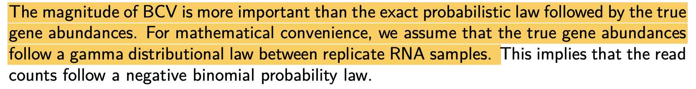

EdgeR原理探究
负二项分布模型
EdgeR包使用了负二项分布来对各个样本中的基因表达进行分析。
>
负二项分布描述的是第r次成功前失败的次数。一个成功概率为p的伯努利试验，不断重复，直至失败r次。此时成功的次数为一个随机变量，用\(X\)表示。称\(X\)服从二项分布，记作\(X \sim NB(r,p)\)
为什么EdgeR作者将总的样本中的基因读数认作是服从负二项分布的呢？

从手册中可知，原因有2个。一个是所谓的BCV值重要性比真实的基因丰度概率分布更重要。另一个是作者假定了基因丰度服从了伽马分布。
Biological coefficient of variation（BCV）
这个所谓的BCV，便是生物变异系数，按照手册中的定义，假设我们有\(i\)个样本（有着多种分组），而对于单独一个样本而言，可测得总的基因\(G\)的读取数。这样我们也可知道第\(i\)个样本中第\(g\)个的读取数占这个样本所有读取数的多少（百分数），记做\(\pi_{gi}\)，而将所有基因所占的部分加起来肯定等于1，则有\(\sum_{g=1}^G \pi_{gi} = 1\)。
model
EdgeR包采用了两种统计学方法，一种是所谓的精确统计，另一种是基于广义线性模型（glm）的统计。从官方文档来看，官方更为推崇glm。
这两种方法都采用了经验贝叶斯方法来估计特定基因的生物变异。